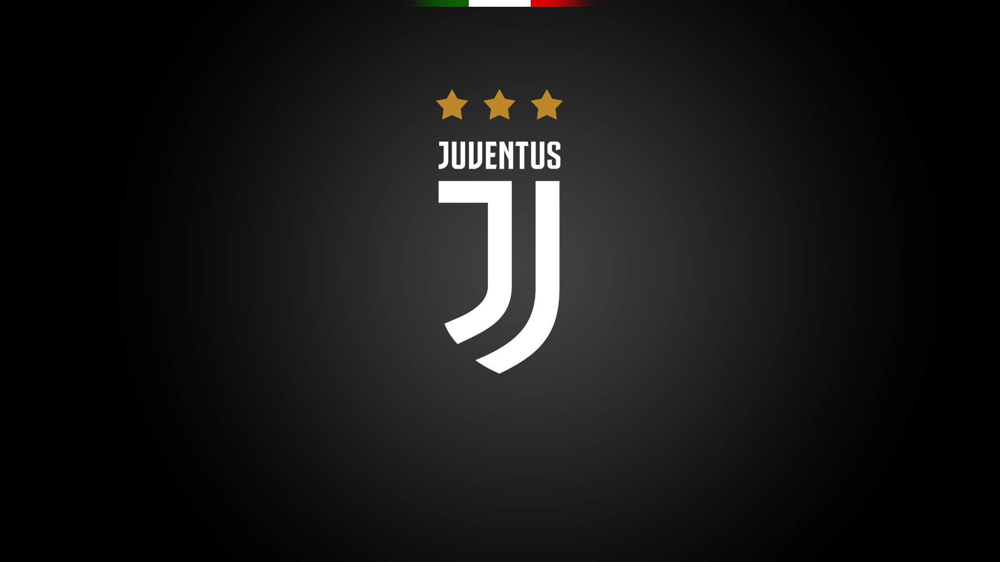

Футбольний клуб «Юве́нтус» (італ. Juventus Football Club, неформальне прізвисько «Юве» (Juve); назва походить від лат. iuventus — молодість, молодь) — футбольний клуб з міста Турин, один з найстаріших клубів Італії, та один з найбільш титулованих клубів Європи та світу. Заснований в 1897 році як «Спорт-клуб Ювентус» групою учнів середньої школи в Турині, є третім старим італійським клубом і одним з 2 клубів з Турина в Серії А. З 1920-х років клубом володіє сім'я Аньєллі.
Cайт